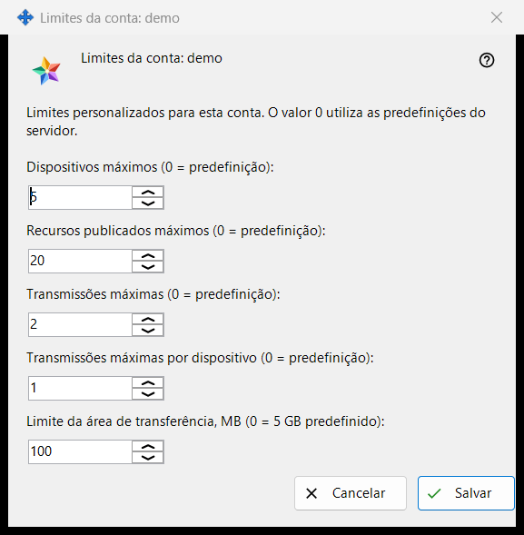
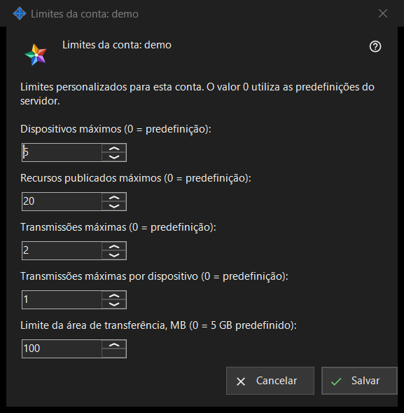

Limites da conta
Finalidade
Define limites individuais para uma conta do Media Exchange Server que gere; um valor deixado em 0 segue a predefinição do servidor. A janela abre-se a partir do botão «Limites..» por baixo da lista de contas na página Media Exchange Server das definições do Share Manager, que aparece quando há uma conta selecionada. O título nomeia a conta: «Limites da conta: <login>».


Nesta ordem
- Selecione a conta e clique em «Limites..».
- Defina um número para cada limite que quer alterar e deixe 0 para a predefinição do servidor.
- Clique em «Salvar».
- Leia a linha de resultado: «Limites da conta <login> guardados.»
Os elementos
Dispositivos e recursos
«Dispositivos máximos (0 = predefinição):» limita os dispositivos que podem ter sessão iniciada na conta. «Recursos publicados máximos (0 = predefinição):» limita as pastas partilhadas e outros recursos que a conta pode publicar no servidor.
Transmissões
«Transmissões máximas (0 = predefinição):» limita as transmissões de toda a conta, e «Transmissões máximas por dispositivo (0 = predefinição):» limita as que um só dispositivo da conta pode iniciar.
Limite da área de transferência
«Limite da área de transferência, MB (0 = 5 GB predefinido):» define o maior valor que a conta pode enviar para a sua área de transferência no servidor, em megabytes inteiros. Um limite guardado em unidades mais pequenas, por exemplo 512 KB, aparece como 0 e mantém o seu tamanho exato enquanto não mexer neste campo.
Salvar e cancelar
«Salvar» substitui no seu conjunto os limites próprios da conta: cada número acima de 0 passa a ser um limite, cada 0 significa a predefinição do servidor e cinco zeros removem as exceções da conta. «Cancelar» não altera nada. Se o servidor recusar um valor, a linha de resultado indica o motivo, por exemplo «Limite não permitido: tem de ser um número inteiro dentro do intervalo aceite pelo servidor.»
Definições do gestor · Definições de partilha SFTP · Definições do servidor de troca